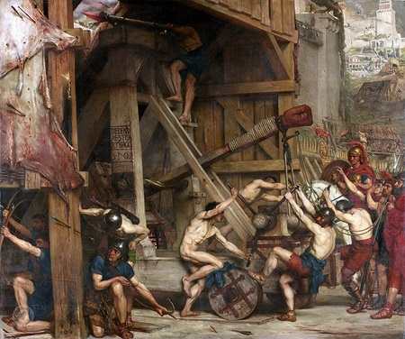

Le Siège de Carthage

Le contexte
En 149 av. J.-C., Rome cherche depuis des années un prétexte pour détruire définitivement Carthage. Bien qu'affaiblie par le traité de 201 av. J.-C., Carthage a réussi à se redresser économiquement, ce qui inquiète Rome. Le sénateur romain Caton l'Ancien conclut chacun de ses discours par la célèbre formule : "Carthago delenda est" — Carthage doit être détruite.
Rome impose alors à Carthage des conditions inacceptables : livrer ses armes, puis quitter la ville pour s'installer à l'intérieur des terres, loin de la mer. Carthage refuse et se prépare à résister. Le siège commence.
Source : Wikipedia — Siège de Carthage
Trois ans de résistance
Carthage tient tête à Rome pendant trois ans. Les habitants fondent leurs bijoux et objets en métal pour fabriquer des armes. Les femmes coupent leurs cheveux pour en faire des cordes pour les catapultes. La ville tout entière se mobilise dans un élan de résistance désespéré.
Les premières années du siège sont difficiles pour les Romains, qui essuient des échecs répétés face aux fortifications puissantes de Carthage. Ce n'est qu'avec l'arrivée du jeune général Scipion Émilien en 147 av. J.-C. que Rome prend enfin l'avantage. Il réorganise l'armée, bloque le port et encercle complètement la ville.
Source : Wikipedia — Siège de Carthage
L'étau se resserre
Coupée de tout ravitaillement, Carthage commence à souffrir de la famine. En 146 av. J.-C., les Romains percent enfin les défenses et pénètrent dans la ville. Les combats se poursuivent rue par rue, maison par maison, pendant six jours et six nuits. Chaque bâtiment est pris d'assaut, chaque étage disputé au corps à corps.
La résistance finale se concentre autour de la citadelle de Byrsa. C'est là que les derniers défenseurs, conduits par le général Hasdrubal le Boétharque, font leur ultime résistance avant de capituler.
Source : Wikipedia — Siège de Carthage